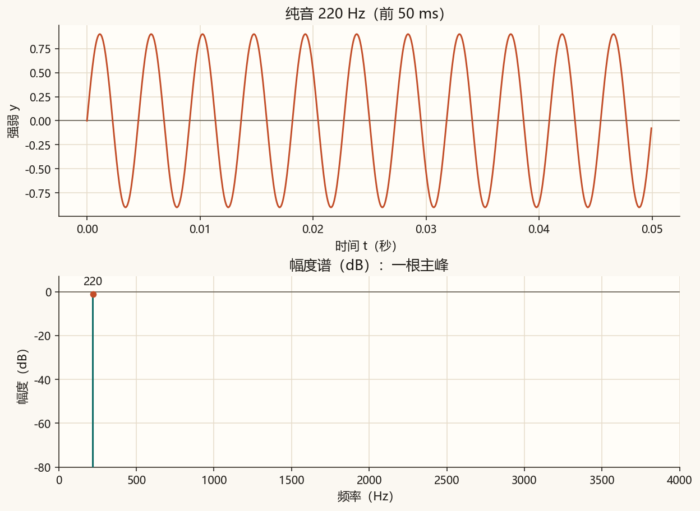
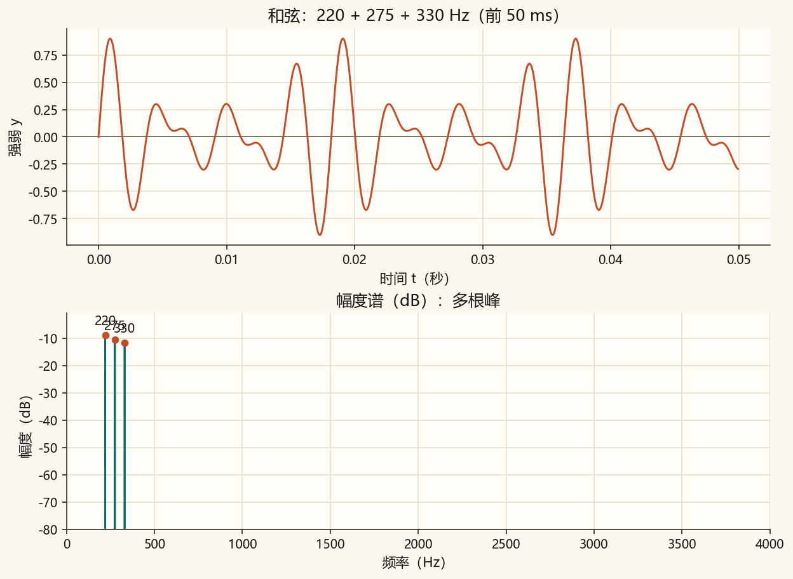
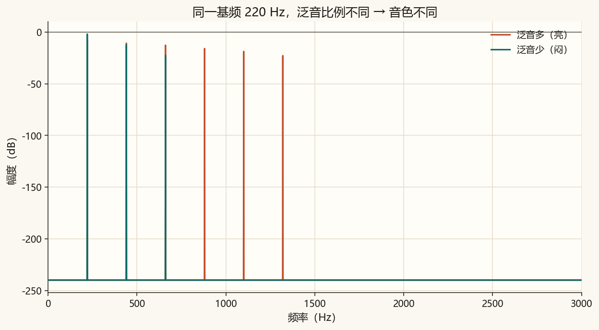
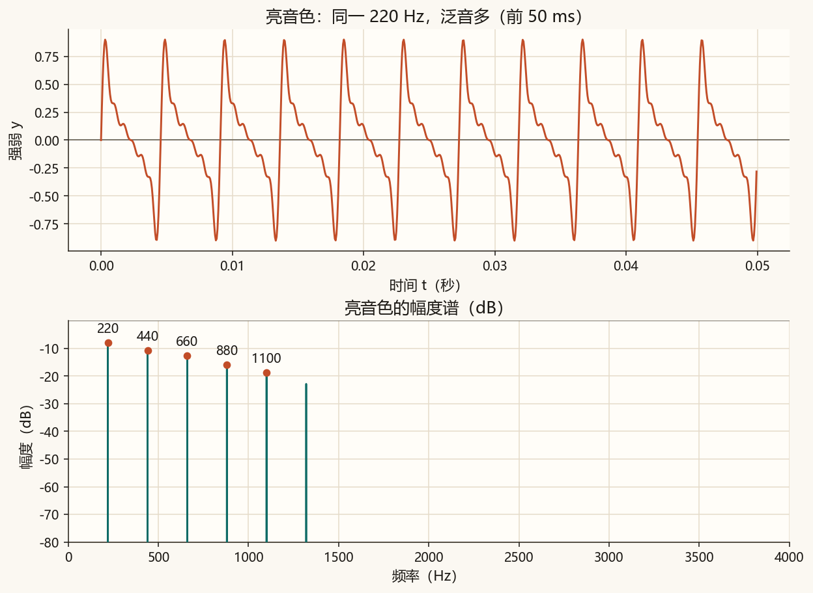
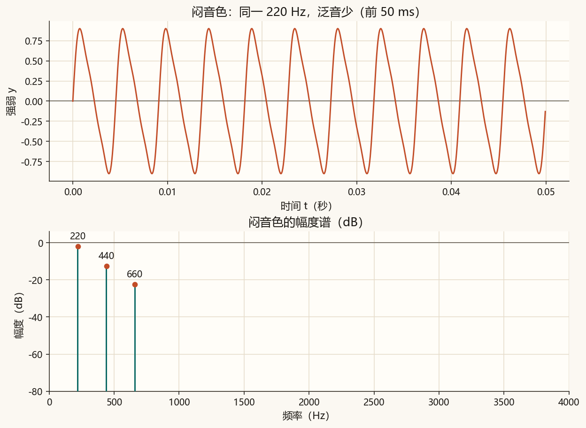
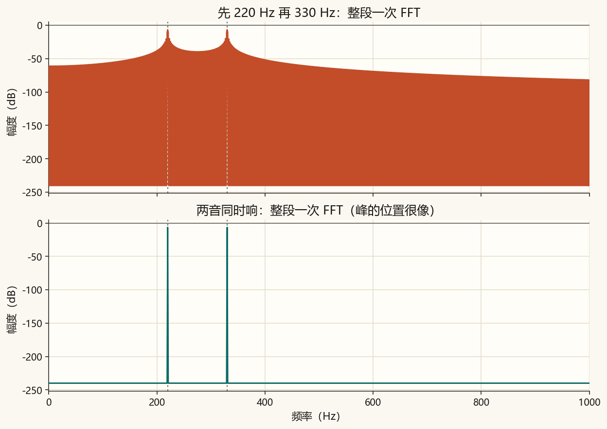
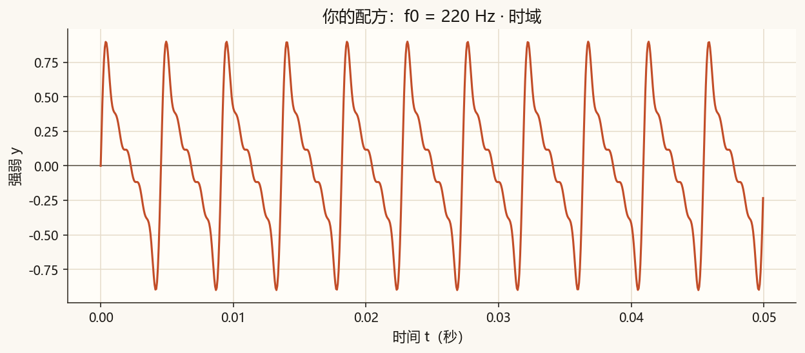
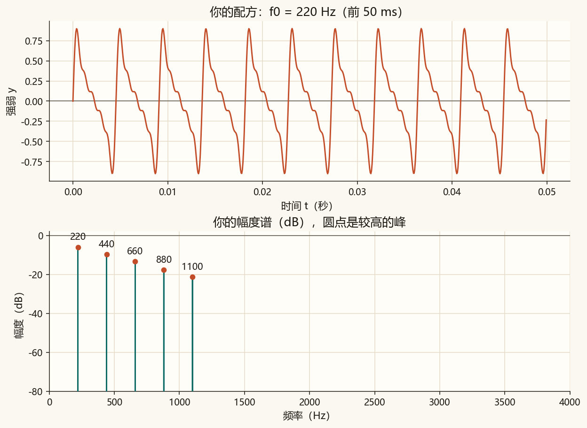

第 7 篇 · 听得见的频谱 · 约 50 分钟
前几篇的点都很短。这一篇用合成的「像录音一样」的声音：纯音、和弦、同一基频不同泛音。读进 wav、画波形和以分贝显示的幅度谱，并看清整段一次 FFT 为什么分不出音符谁先谁后。
先合成一秒、采样率 16000 Hz 的纯正弦。波形是一条干净的起伏；频谱用分贝（dB）画幅度，主峰应靠近 220 Hz。

把 220 Hz、275 Hz、330 Hz 叠在一起，耳朵听到一个更丰满的和弦。频谱上应出现多根峰，而不再是一条孤立的线。

基频都是 220 Hz，改变泛音（谐波）的相对强弱，听感会从闷变亮。这就是音色差别的一种简单模型：音高看 f₀，亮度看高次泛音有多少。

| 倍数 | 亮 | 闷 |
|---|---|---|
| 1 × 220 | 0.55 | 0.85 |
| 2 × 220 | 0.40 | 0.25 |
| 3 × 220 | 0.32 | 0.08 |
| 4 × 220 | 0.22 | 0 |
| 5 × 220 | 0.16 | 0 |
| 6 × 220 | 0.10 | 0 |


先只响 220 Hz 半秒，再只响 330 Hz 半秒。整段录音做一次 FFT，频谱上仍可能看到两根峰——和「两音同时响」很像。FFT 回答「这一整段里有过哪些频率」，不回答「谁先谁后」。

先后两个音。
两音同时（对照）。
脚本用标准库 wave 读文件：取采样率、把字节变成整数，多声道先平均成单声道，再除以峰值归一化。课文不依赖你麦克风里的现成采样，所有示范音都是脚本写出来的。
with wave.open(path, "r") as handle:
channels = handle.getnchannels()
rate = handle.getframerate()
raw = handle.readframes(handle.getnframes())
# 16 位整数 → 浮点 → 单声道 → 按峰值归一化拖动 2 倍、3 倍、4 倍泛音的振幅。基频固定 220 Hz。幅度谱用线性柱示意（不是 dB），听感要跑脚本听 wav。
完整脚本在 code/ch07_audio.py。它会写出课文 wav、画波形与 dB 谱，并标出较高的峰。
python code/ch07_audio.py终端里应出现「自检通过」，以及纯音主峰约 220 Hz。课文图包括 ch07_pure.png、ch07_chord.png、ch07_timbre.png、ch07_bright.png、ch07_dull.png、ch07_order_blind.png。你的结果只跟随顶部的 HARMONICS_MINE 或 WAV_PATH_MINE。
若终端中文是乱码，先执行 chcp 65001。图和 wav 照样会保存。
code/ch07_audio.py。默认用 HARMONICS_MINE 合成，WAV_PATH_MINE = ""。5: 0.40，运行。听 ch07_timbre_mine.wav，看 ch07_mine_spectrum.png：高频更明显。WAV_PATH_MINE 写成相对项目根的路径（例如 assets/audio/ch07_bright.wav），再运行：mine 图改读该文件。WAV_PATH_MINE 改回 ""。

你的声音：
纯音主要一根峰；和弦有多根峰，对应同时存在的几个频率。
高次泛音的相对强弱不同。泛音多、高处更强，通常更亮；几乎只剩基频，更闷、更接近纯音。
整段一次 FFT 只统计整段里出现过的频率成分，把时间顺序揉掉了。要看先后，需要短时频谱一类方法。
整段一次 FFT 分不清音符先后。下一篇用短时傅里叶把时间切成一帧帧，画出语谱图：横轴时间，纵轴频率。